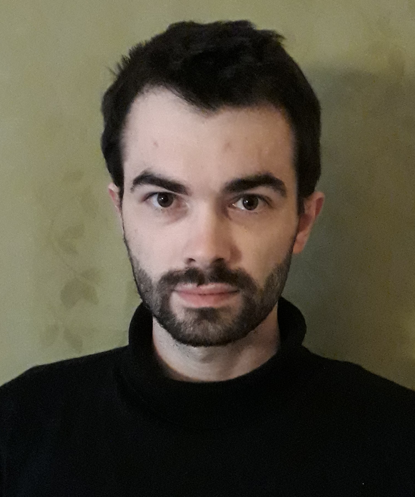
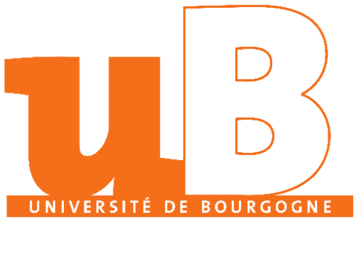
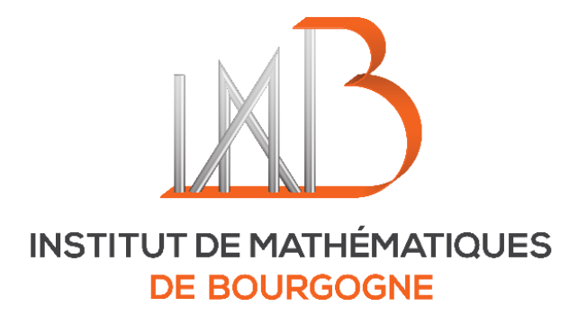
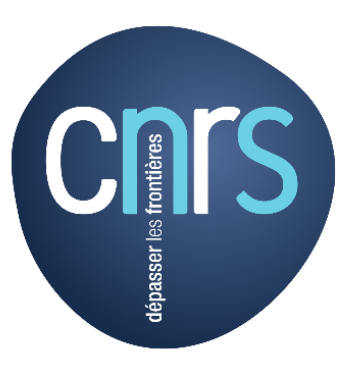

Welcome to the mathematical website of Lukas Woike
Since September 2022,
I am a professeur junior at the University of Burgundy in Dijon, more specifically at the
Institut de Mathématiques de Bourgogne. I am affiliated with the research groups
« Géométrie, Algèbre, Dynamique et Topologie »
and
« Mathématique-Physique ».
From October 2020 to August 2022, I was a postdoc at the
University of Copenhagen, where my mentor was Nathalie Wahl.
From January 2022 to August 2022, my position in Copenhagen was supported by a
Horizon 2020 Marie Skłodowska-Curie Fellowship of the European Union. The project has the number 101022691 and was concerned with a differential graded Verlinde formula and its connection to the Deligne's E2-structure on the Hochschild complex.
Before coming to Copenhagen, I obtained my doctoral degree from the University of Hamburg under the supervision of
Christoph Schweigert. My doctoral studies were supported by the
Research Training Group 1670 of the DFG.
My research lies at the intersection of algebra, topology and mathematical physics and is often concerned with topological field theories in some shape or form. More specifically, my interests are:
- Topological field theories in dimension three;
- Modular functors (systems of mapping class group representations), in particular those built from non-semisimple representation categories;
- Topological cyclic and modular operads, in particular the operad of little disks, handlebodies or surfaces;
- Higher algebraic structures in the homological algebra of non-semisimple representation categories, in particular differential graded generalizations of modular functors and topological field theories.
My email address is username (at) u-bourgogne.fr with the username being firstname.lastname.
With Adrien Brochier,
Gwénaël Massuyeau and Emmanuel Wagner, I am organizing the
Journées de topologie quantique, a new seminar taking place most likely every few months; it will be alternating between Paris and Dijon.
Here are
slides
for a preview for a master course on TQFTs with Renaud Detcherry.

Image source: private.
Preprints
- The Dehn Twist Action for Quantum Representations of Mapping Class Groups. With Lukas Müller. arxiv.org/abs/2311.160200
- A Classification of Modular Functors via Factorization Homology. With Adrien Brochier. arxiv.org/abs/2212.11259
- The distinguished invertible object as ribbon dualizing object in the Drinfeld center. With Lukas Müller. arxiv.org/abs/2212.07910
Publications (accepted, in press, published online and/or in print, ...)
- Classification of Consistent Systems of Handlebody Group Representations. With Lukas Müller.
Int. Math. Res. Not. rnad178, 2023.
arXiv.org/abs/2201.07542
- Homotopy Invariants of Braided Commutative Algebras and the Deligne Conjecture for Finite Tensor Categories. With Christoph Schweigert. Adv. Math. 422, 109006, 2023.
arXiv.org/abs/2204.09018
- The differential graded Verlinde Formula and the Deligne Conjecture. With Christoph Schweigert. Proc. London Math. Soc. 126(6):1811-1841, 2023. arxiv.org/abs/2105.01596
- The Diffeomorphism Group of the Solid Closed Torus and Hochschild Homology. With Lukas Müller. Proc. Amer. Math. Soc. 151(6):2311-2324, 2023. arXiv/abs/2201.03920
- The Trace Field Theory of a Finite Tensor Category. With Christoph Schweigert. Alg. Rep. Theory,
2022. arxiv.org/abs/2103.15772
- Cyclic framed little disks algebras, Grothendieck-Verdier duality and handlebody group representations. With Lukas Müller. Quart. J. Math. 74(1):163-245, 2023. arxiv.org/abs/2010.10229
- Homotopy Coherent Mapping Class Group Actions and Excision for Hochschild Complexes of Modular Categories. With Christoph Schweigert. Adv. Math. 386, 107814, 2021. arxiv.org/abs/2004.14343
- The Hochschild Complex of a Finite Tensor Category. With Christoph Schweigert. Algebr. Geom. Top. 21(7):3689-3734, 2021. arxiv.org/abs/1910.00559
- Categorification of algebraic quantum field theories. With Marco Benini, Marco Perin and Alexander Schenkel. Lett. Math. Phys. 111, 35, 2021. arxiv.org/abs/2003.13713
- Dimensional Reduction, Extended Topological Field Theories and Orbifoldization. With Lukas Müller. Bull. London Math. Soc. 53(2):392-403, 2020. arxiv.org/abs/2004.04689
- The Little Bundles Operad. With Lukas Müller. Algebr. Geom. Top. 20:2029-2070, 2020. arxiv.org/abs/1901.04850
- Equivariant Higher Hochschild Homology and Topological Field Theories. With Lukas Müller. Homology Homotopy Appl. 22(1):27-54, 2020. arxiv.org/abs/1809.06695
- Homotopy theory of algebraic quantum field theories. With Marco Benini and Alexander Schenkel. Lett. Math. Phys. 109:1487-1532, 2019. arxiv.org/abs/1805.08795
- Parallel Transport of Higher Flat Gerbes as an Extended Homotopy Quantum Field Theory. With Lukas Müller. J. Homotopy Relat. Str. arxiv.org/abs/1802.10455
- Extended Homotopy Quantum Field Theories and their Orbifoldization. With Christoph Schweigert. J. Pure Appl. Algebra arxiv.org/abs/1802.08512
- Involutive categories, colored ∗-operads and quantum field theory. With Marco Benini and Alexander Schenkel. Theory Appl. Categ. 34(2):13-57, 2019. arxiv.org/abs/1802.09555
- A Parallel Section Functor for 2-Vector Bundles. With Christoph Schweigert. Theory Appl. Categ. 33(23):644-690, 2018. arxiv.org/abs/1711.08639
- Operads for algebraic quantum field theory. With Marco Benini and Alexander Schenkel. Commun. Contemp. Math., 2020. arxiv.org/abs/1709.08657
- Orbifold Construction for Topological Field Theories. With Christoph Schweigert. J. Pure Appl. Algebra 223:1167-1192, 2019. arxiv.org/abs/1705.05171
Institut de Mathématiques de Bourgogne
UMR 7586 CNRS
Université de Bourgogne
Faculté des Sciences Mirande
9 Avenue Alain Savary
F-21078 Dijon


